In order to visualize and explain the various concepts introduced in the FAME lessons we use a variety of visuals. Some visuals are used in most lessons, others are just for a specific lesson. Here is a small selection of visuals.
There is a basic set of four art elements which play a vital role in most paintings:
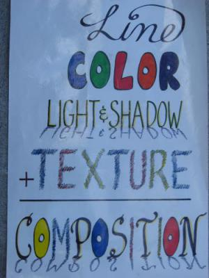
Art
Composition Visual
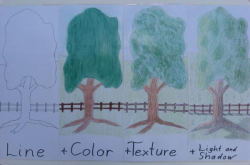
Another
Art Composition Visual
There are four main elements used in composing a piece of music:
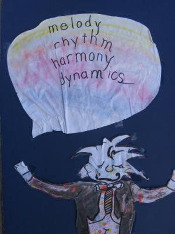
Mucis Composition Visual
We also use visuals to explain these elements into more details:
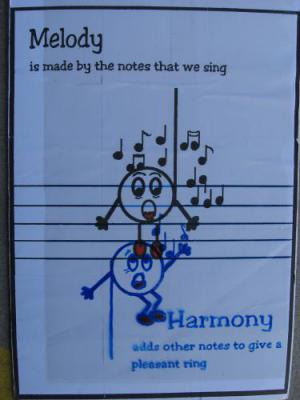
How do melody and harmony complement each other?
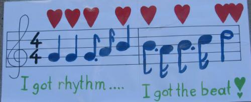
What is rythm?
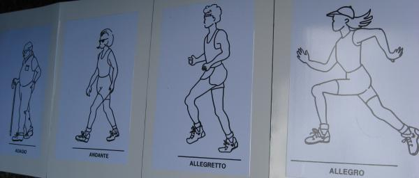
The various tempi of a musical piece
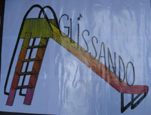
Dynamics: what is glissando?
Many concepts we introduce and talk about we visualize with a visual. Together with other props and lesson specific docent costumes this helps the students to understand and remember the various aspects of music and art.
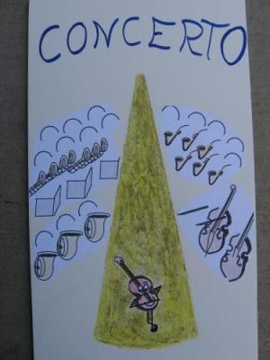
Concerto visual featurung the violin as the solo instrument
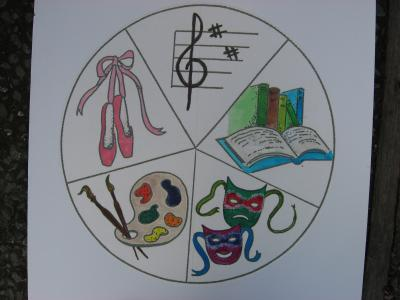
Opera visual
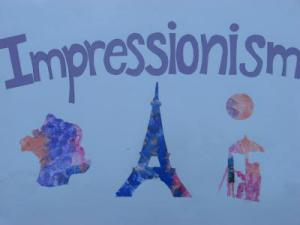
Impressionism visual
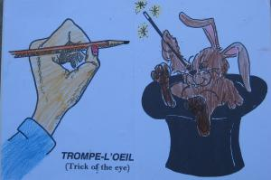
Trompe-l'oeil visual
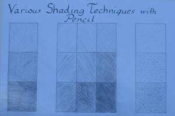
Different ways to shade when drawing with a pencil